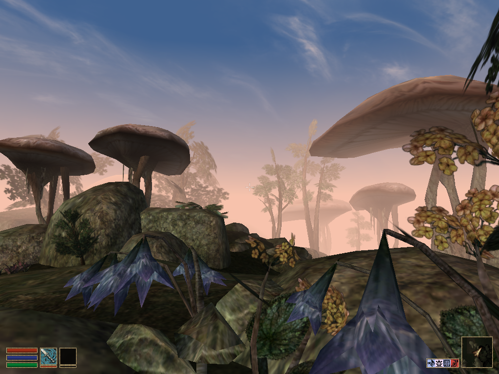
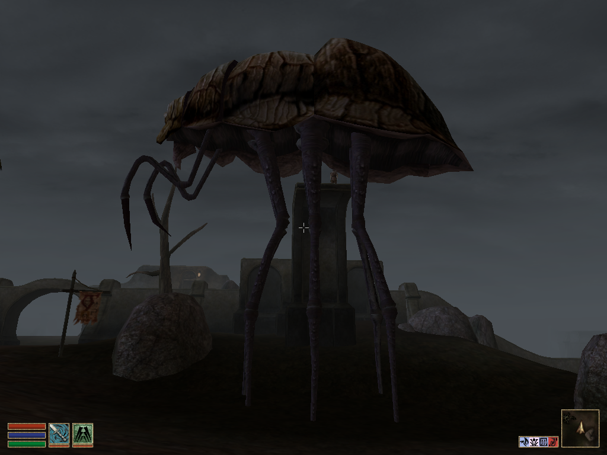

Fallout 4 и другие игры Bethesda Softworks а так же их ценность для индустрии
Поиграл тут в Fallout 4 и столкнулся с невероятным хейтерством этой игры в рунете. И дальше будет моя субъективная оценка игры.
Ругают диалоги (заслуженно), а также квесты и персонажей (незаслуженно). Но больше всего меня поражает, что люди говорят “meh”, когда видят откровенно крутые вещи в игре (то же Светящееся Море) и сравнивают с New Vegas’ом. Конечно, моё знакомство с Вегасом закончилось в самом начале (примерно после слов одного из первых NPC “А ДАВАЙ ПОСТРЕЛЯЕМ В ТАРАКАНОВ”, которые смотрелись дико странно после нормального туториала в нелюбимом многими Fallout 3).
Мои знакомые много пишут и говорят о том, как много в этой игре плохого, и в упор не видят замечательных вещей (а может видят, но не хотят о них говорить), и это всё напоминает брюзжание старпёров о том, что вот раньше-то трава была зеленее и деревья выше. Но ведь в конкретно этом случае всё не совсем так.
Диалоги и правда отвратительные и не идут в сравнение с диалогами из Ведьмака 3, но тут это и не главное. Главное для меня, например, что тут можно прийти в любую локацию и узнать её историю или историю последних посетителей локации не только через терминалы, но ещё и через не такие явные моменты. Например в одной церкви в Бостоне скелеты людей лежат в тех позах, в которых их застал взрыв бомбы, или например в одном из автобусов за рулём сидит медведь в фуражке водителя а вокруг лежат трупы рейдеров (которых видать сожрали радскорпионы, трупы которых рядом) что говорит нам о чувстве юмора этих самых бандитов. А ещё тут есть записки каких-то поселенцев, которым пришлось перепрограммировать мистера Помощника на “получение удовольствия от мира” в результате чего робот стал напоминать каннабиоидного наркомана, который летает по поселению и повторяет одни и те же фразы “Улёт”, “Круто” и прочее, и при попытке поговорить с ним говорит тебе “Мир” и улетает.
Или когда ты идёшь по тому же Светящемуся Морю в силовой броне, в Пип-бое у тебя играет “Марс, войну приносящий” Холста по радио “Классика”, а вокруг натуральный ад из фильма “Константин”, только зелёный: всё в дымке, тучи, постоянные гром и молнии, трещащий счётчик Гейгера, лезут особо злые гули, мутировавшие насекомые, а ты пытаешься их всех выкосить, потому что патронов нет, а те, которые есть, урона почти не наносят, броня уже ломается и вообще всё крайне эпично.
Или периодические случайные события, которые происходят в мире. Например, можно натолкнуться на гигантскую разборку в центре Бостона между супермутантами, рейдерами и Братством Стали, когда ты оказываешься в таком себе мини-Вьетнаме, только в каменных джунглях. Летают вертибёрды, кричат мутанты, вопят рейдеры, всё взрывается и тебе очень-очень хочется выжить и добраться наконец до Добрососедства. Пожалуй, таких эмоций ни одна РПГ до этого не давала. По крайней мере мне.
Вот именно такими моментами и сильна Беседка. Да, ей не очень удаются основные квесты и написание диалогов в целом, но у неё есть шикарные истории из книг в TES или терминалов в Fallout. Тут стоит немного уйти вглубь истории и вспомнить, как я вообще познакомился с играми этой студии.
Шёл где-то 2003-2004 год, у меня только появился первый компьютер и я, естественно, устанавливал все игры. И вот примерно в одно время у меня появилась возможность играть и в новенький тогда Neverwinter Nights и не менее свежий и вышедший на русском TES III: Morrowind. И я, дурак, выбрал НВН, пытался играть, но игра показалась мне скучной и я дропнул его как только вышел из города после первого длинного квеста. Как раз в это время мои товарищи рассказывали мне истории, которые случались с ними в TES’е и я-таки решился попробовать. И вот я запускаю игру, а там ТАКОЕ (на дворе 2003 год, на секундочку).

А также такое

Сейчас оно конечно не выглядит так круто, но тогда это просто было невероятно. Добавьте сюда музыку от Джереми Соула.
И почти неограниченную по тому времени свободу действий (до сих пор у многих RPG нет и такой, из 2006) и становится понятно, как такая смесь била по неокрепшему мозгу школьника.
После Морровинда вышел Обливион, в который я не смог поиграть по причине слабости моей тогдашней системы (но очень хотел) а потом, в 2008 году вышел Fallout 3.
Многие ругали его за хреновый сценарий, хотя один мой друг тогда рассказал мне, что плох там только основной сюжет и в остальном игра очень хорошая. Лично меня тогда хватило ненадолго, видимо, сказалось то, что я учился на последнем курсе и к тому же работал, так что дел было и так достаточно. К тому же там была неудобная для меня система стрельбы не в VATS-е да и в целом такая себе шутерная часть.
Шло время и в 2011 году вышел Skyrim, к которому я сначала относился с сильным скепсисом. Я уже скучал по гигантским блохам и странной архитектуре из Морровинда и какой-то очередной фентези-поделки мне совершенно не хотелось. Но когда я чуть позже попробовал пиратку и через пару десятков часов смог отойти от мира я понял, что вот он, достойный наследник моей любимой RPG. В ней было всё, что мне так нравилось в третьей части этой серии: и гигантский мир (не пустой при этом), невероятные виды (вулканические пустоши Морровинда сменились тундрой Скайрима), обилие фракций и квестов про них, ИЗБРАННОСТЬ, и самое главное - ультимативная свобода. Добавили, конечно, многое (одни драки с драконами чего стоят), но это всё эволюционное развитие типичной игры от Bethesda. Возможно Witcher 3 и игра на 200 часов, а Скайрим оказался игрой на 4 года. Какая ещё сингловая игра может похвастаться настолько большим временем, проведённым в ней?
И тут выходит Fallout 4 и это, блин, невероятно круто. Та же магическая сила, засасывающая тебя в игру полностью, та же безграничная свобода. Плюс новые механизмы (например, крафт) добавляют ощущения причастности к игре, да и случайные события не только никуда не делись, но ещё и приумножились. Теперь фракции не только двигаются по карте и встречаются друг с другом, но ещё и захватывают ключевые точки на карте, постоянно респавнятся и прочее. Те же минитмены после определённого времени начинают самоорганизовываться и отстреливать врагов свободного Содружества. Мир просто невероятно живой, всё время в движении и такого просто до этого не было никогда. Такое ощущение, что им теперь нужна только система Nemesis из Shadow of Mordor и всё, это будет почти идеальная симуляция мира для ролевой игры. Десятки квестов, которые ты получаешь различными способами (от тех же эвентов до прослушивания радио на обнаруженных частотах). Хорошие персонажи (мэр гуль в городе наркоманов в пиратском камзоле, супермутант, под впечатлением Макбета желающий найти бальзам прекраснодушия и выпить его, чтобы стать самым сильным и вырезать всех людей, странный чувак, всё время меняющий внешность для маскировки) ешё больше приковывают внимание к игре и веселят. Основной сюжет игры, конечно, не про отца, ищущего сына, а всё-таки про синтетическую жизнь и то, как люди боятся того, чего не понимают.
В общем все эти слагаемые в сумме дают лучшую RPG этого года, где, наконец, можно делать, что хочется, а не тупо бегать от одного квеста к другому. Интересный факт, что никто кроме Беседки не делает таких игр да даже и не стараются. Возможно, эта ниша только для одной конторы, как в своё время From Software нашла аудиторию для своей Souls-серии, да и развивала она свои игры тем же эволюционным путём. Хочется верить, что TES VI не заставит ждать себя больше чем 3-4 года и не наследует от F4 его мелких недостатков, а только самое лучшее.